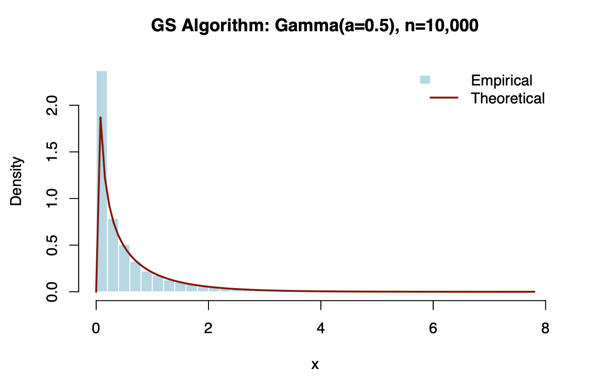
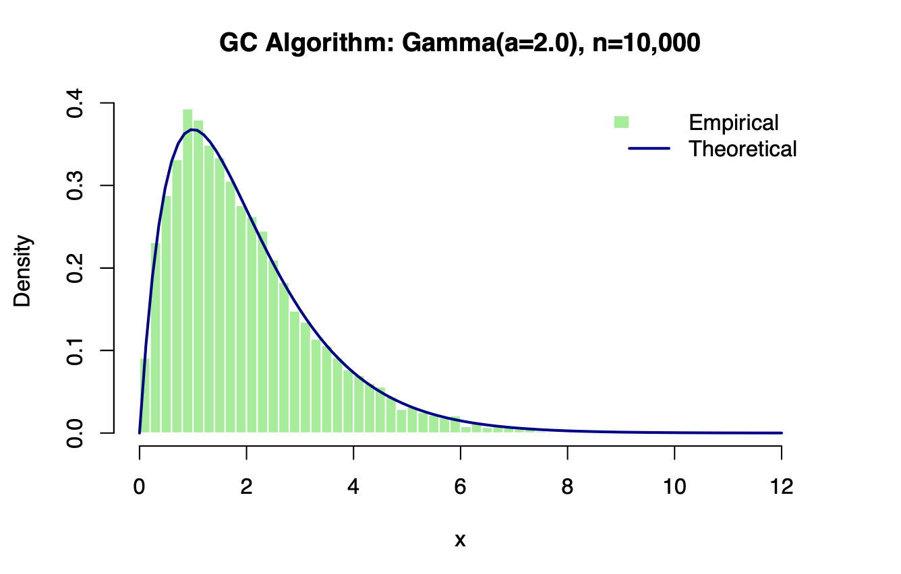
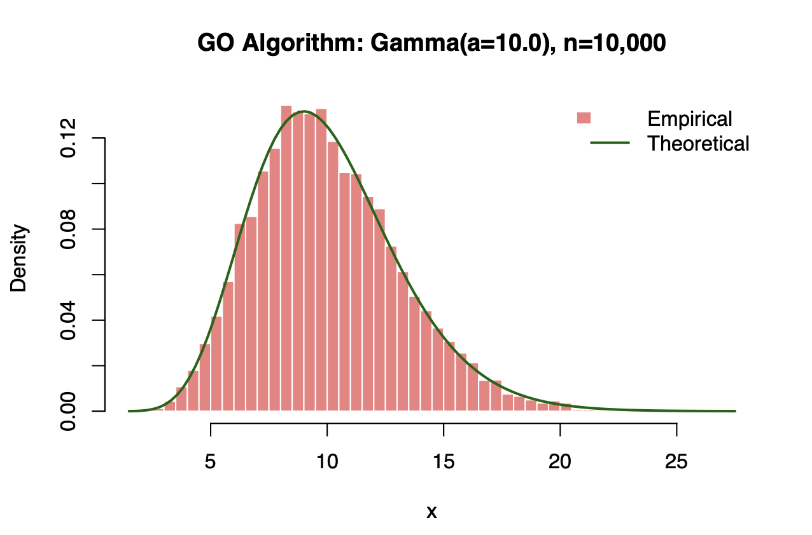
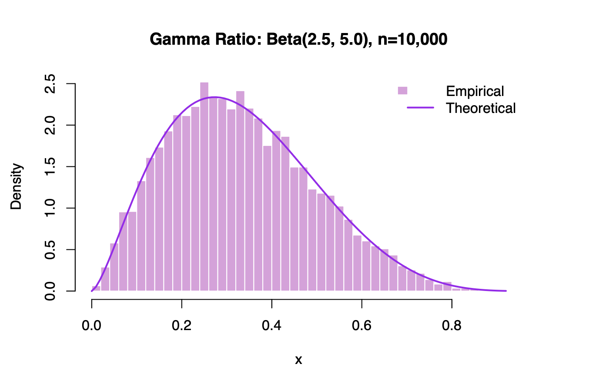

Gamma & Beta RNG Algorithms
A reproduction of the industrial-grade algorithms behind R's random number generation. We implemented the Dieter & Ahrens (1974) framework, using dynamic routing and algebraic optimization to solve the performance degradation found in standard inverse-CDF methods.
The Algorithms
No single acceptance-rejection envelope fits the Gamma distribution perfectly because its shape changes drastically as the shape parameter α grows. We implemented three distinct algorithms to cover the entire domain efficiently.
Algorithm GS
SMALL PARAMETERS (α ≤ 1)When α ≤ 1, the Gamma density approaches infinity at x = 0. Standard envelopes fail here because they cannot capture this vertical asymptote.
How it works: We implemented a Piecewise Envelope. We use a power function xα-1 for the region close to zero (to match the asymptote) and an exponential decay e-x for the tail (x > 1).
# Algorithm GS: Piecewise Envelope Logic
if (p <= 1) {
# Case 1: Power function for x <= 1 (Handles Asymptote)
x <- p^(1 / a)
if (log(u_prime) <= -x) { accepted <- TRUE }
} else {
# Case 2: Exponential decay for x > 1
x <- -log((b - p) / a)
if (log(u_prime) <= (a - 1) * log(x)) { accepted <- TRUE }
}Algorithm GC
MEDIUM PARAMETERS (1 < α ≤ 2.53)For parameters slightly above 1, the distribution has a mode but is still heavily skewed. A normal envelope is too thin (its tails decay too fast), leading to high rejection rates.
How it works: We use a Cauchy Distribution as the envelope. Since Cauchy tails decay at O(x-2) rather than exponentially, they remain "thick" enough to enclose the skewed Gamma density efficiently.
# Algorithm GC: Cauchy Envelope Logic
# Step 2: Generate Cauchy candidate using inverse CDF
t <- s * tan(pi * (u - 0.5))
x <- b + t
if (x >= 0) {
# Step 4: Acceptance test (evaluated on log scale)
test_val <- b * log(x / b) - t + log(1 + (t^2 / A))
if (log(u2) <= test_val) { accepted <- TRUE }
}Algorithm GO
LARGE PARAMETERS (α > 2.53)For large α, the Gamma distribution converges towards a Normal distribution. However, evaluating the acceptance ratio requires computing logarithms and exponentials, which are computationally expensive.
The "Squeeze" Optimization
Instead of calculating the full density ratio f(x)/g(x) every time, we check a simple polynomial Squeeze Bound (Lemma 3) first.
If the random variable u falls below this polynomial curve L, we accept immediately. This bypasses the expensive math in over 99% of cases.
Lemma 3: Cubic Squeeze Bound
Valid only when α > 2.53.
# Algorithm GO: Quick Acceptance Logic
if (s_norm >= 0) {
# Simple bound for positive deviation
L <- 1 - S * (W - 1)
} else {
# Cubic correction for negative deviation (Lemma 3)
L <- 1 - S * (W - 1) + (s_norm^3 / sqrt(a)) * W
}
# THE OPTIMIZATION: Check polynomial L before expensive logs
if (u2 <= L) {
samples[i] <- x # Accepted! (O(1) cost)
accepted <- TRUE
} else {
# Only run full log-density check if squeeze fails (< 1% of cases)
}Beta Distribution
EXTENSIONWe also implemented a Beta generator using the Gamma-Ratio Method. Since X/(X+Y) ~ Beta(α, β), we simply draw two independent Gamma variables using our optimized router and compute the quotient. This extends our O(1) efficiency to the Beta family.
generate_beta_from_gamma <- function(n, a, b) {
# Step 1 & 2: Generate independent Gamma variables
x <- generate_gamma_complete(n, a)
y <- generate_gamma_complete(n, b)
# Step 3: Compute quotient
return(x / (x + y))
}The Master Router
To make the generator universally applicable, we built a Master Routing Function that inspects the shape parameter α and automatically dispatches the request to the mathematically optimal algorithm.
generate_gamma_complete <- function(n, a) {
if (a <= 1) {
# Algorithm GS: Handles infinite asymptote at zero
return(generate_gamma_GS(n, a))
} else if (a <= 2.53278) {
# Algorithm GC: Cauchy envelope (GO squeeze invalid here)
return(generate_gamma_GC(n, a))
} else {
# Algorithm GO: Normal-Exp split with Squeeze optimization
return(generate_gamma_GO(n, a))
}
}Validation Results
We verified accuracy by generating 10,000 samples for various parameter configurations and comparing them against R's built-in dgamma and dbeta theoretical densities.
We utilized the Kolmogorov-Smirnov (K-S) Test to statistically quantify the fit. In all cases, p-values exceeded 0.05, meaning we fail to reject the null hypothesis—confirming the generated distributions are statistically indistinguishable from the true theoretical distributions.
| Algorithm | Distribution Parameters | K-S Test p-value | Conclusion |
|---|---|---|---|
| GS | Gamma (α = 0.5) | 0.6150 | PASS |
| GC | Gamma (α = 2.0) | 0.6292 | PASS |
| GO | Gamma (α = 10.0) | 0.5681 | PASS |
| Beta | Beta (α=2.5, β=5.0) | 0.7920 | PASS |



